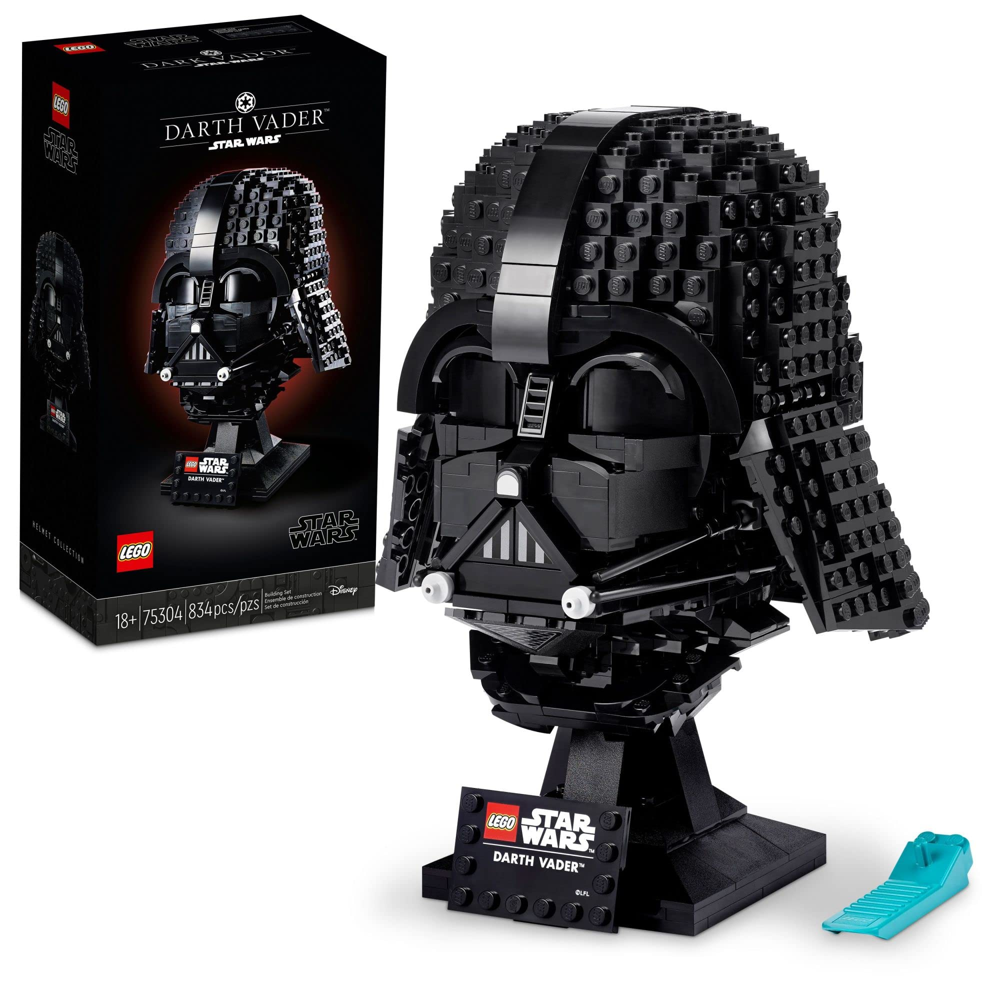
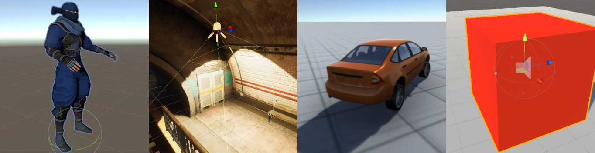
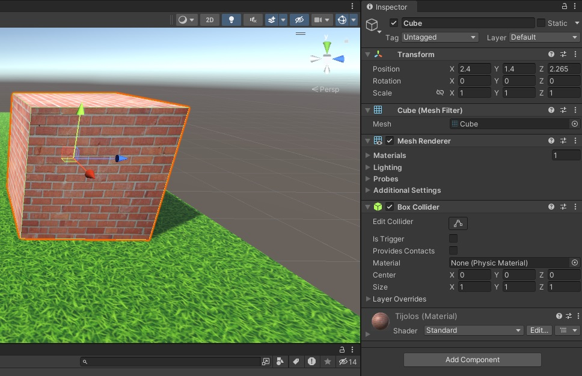
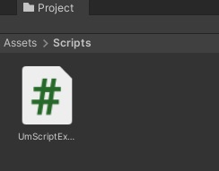
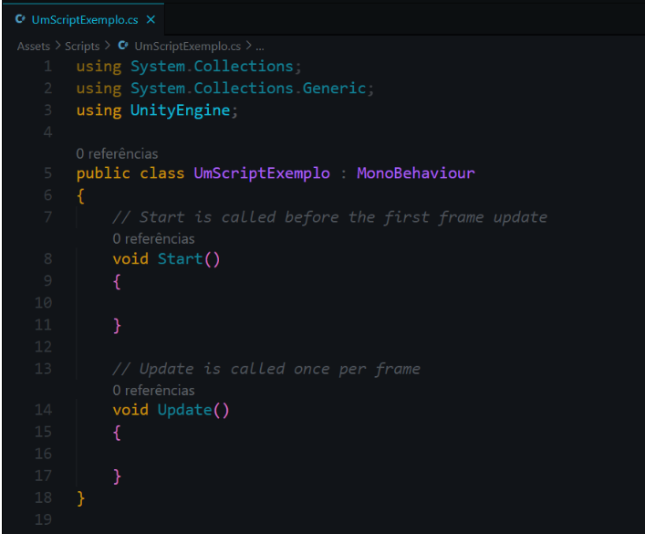
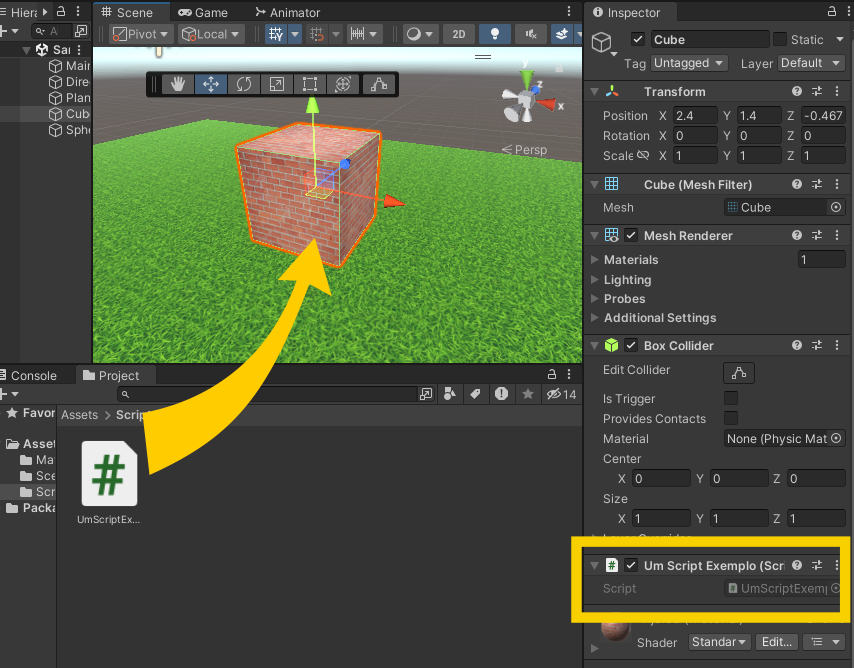
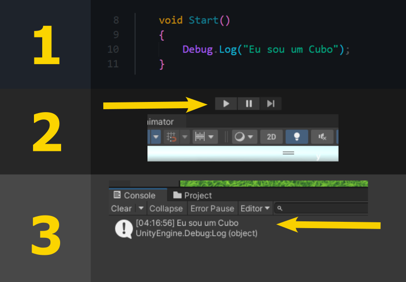
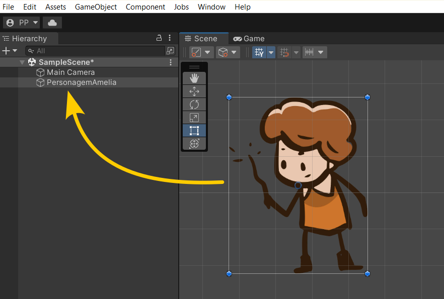

Vamos iniciar os estudos?
PlayAssista ao vídeo abaixo para uma introdução aos seus estudos
Como utilizar componentes para desenvolver jogos?
Imagine que você está construindo um jogo na Unity, com vários personagens, objetos interativos e inimigos. Você percebe que muitos desses elementos compartilham características e comportamentos semelhantes, como a movimentação dos personagens ou a colisão dos objetos.
Aqui é onde a Programação Orientada a Componentes (POC) entra em ação! Em vez de programar cada entidade individualmente, você pode criar componentes autônomos e reutilizáveis, como "Movimentação" ou "Colisor", e adicioná-los aos objetos que precisam dessas funcionalidades.
Isso torna o código mais organizado, eficiente e fácil de modificar. Assim, você pode focar em construir uma experiência de jogo incrível, sabendo que a POC facilitará a gestão de comportamentos complexos em seu projeto.
Programação Orientada a Componentes, ou POC, é como um grande quebra-cabeças de programação. Imagine que cada parte de um software (como um jogo) é um pedaço de um quebra-cabeças - nós chamamos esses pedaços de "componentes". Cada componente tem seu próprio comportamento e sua própria "cara" - ou seja, ele tem uma função específica e sabe exatamente como interagir com os outros componentes.
Esses componentes são como peças de encaixe: eles são autônomos, o que significa que cada um funciona sozinho, e também são reutilizáveis, podendo ser usados em várias partes diferentes do software.
Assim como as peças de LEGO, você pode juntar esses componentes de diferentes maneiras para criar coisas mais complexas.
Em um jogo, vários personagens e objetos podem ter comportamentos e características parecidos. Então, em vez de programar cada um do zero, podemos usar a POC para criar componentes reutilizáveis que podem ser usados em vários lugares. Isso nos ajuda a economizar tempo e torna o nosso código mais organizado e fácil de entender.
Componentes na Unity são elementos fundamentais que definem o comportamento e as características dos Game Objects. Eles são como blocos de construção que podem ser adicionados a um Game Object para dotá-lo de funcionalidades específicas. Essencialmente, enquanto um Game Object serve como um contêiner, os componentes são as peças individuais que determinam o que cada Game Object pode fazer e como se comporta no mundo do jogo.
Os Game Objects constituem a fundação de qualquer criação dentro da Unity, atuando como elementos cruciais em qualquer projeto de jogo. Eles servem como contêineres fundamentais para uma infinidade de elementos e funções que definem a experiência do jogo.
Esses objetos podem incorporar uma vasta gama de entidades, desde personagens jogáveis e adversários até objetos colecionáveis, elementos de cenário, câmeras e fontes de luz.
Além disso, eles podem abarcar tanto componentes que interagem diretamente com o usuário quanto elementos estáticos que enriquecem o ambiente do jogo. Portanto, os Game Objects são componentes versáteis e indispensáveis na arquitetura e no desenvolvimento de jogos na plataforma Unity.
Cada Game Object em Unity começa como um objeto vazio, sem propriedades ou funções específicas. A adição de componentes a esses objetos é o que os torna úteis. Por exemplo, adicionar um componente de renderização de malha transforma um objeto vazio em um objeto visível. Adicionar um componente de áudio permite que ele emita sons.
Na imagem abaixo, por exemplo, vemos um objeto cúbico sólido possui um componente de Filtro de Malha (Mesh Filter) e Renderizador de Malha(Mesh Renderer) para desenhar a superfície do cubo, e um componente de Colisor de Caixa (Box Collider) para representar o volume sólido do objeto em termos físicos.
Um GameObject sempre tem um componente Transform acoplado (que representa a posição e a orientação), e este não pode ser removido. Outros componentes, que fornecem funcionalidades ao objeto, podem ser adicionados através do menu de Componentes no editor ou por meio de um script. Além disso, há uma variedade de objetos pré-fabricados úteis (como formas primitivas, câmeras, entre outros) disponíveis no menu GameObject > Objeto 3D.
Os componentes variam amplamente em função e complexidade. Eles podem ser simples, como colisores e luzes, ou complexos, como scripts personalizados escritos em C#. Outros exemplos incluem componentes para renderização, física, animação, e lógica de jogo.
Um dos aspectos mais poderosos dos componentes é a capacidade de adicionar scripts personalizados. Isso permite aos desenvolvedores criar comportamentos e interações específicas para seus jogos, tornando cada Game Object único.
Diferente de muitos outros ativos, os scripts são frequentemente desenvolvidos diretamente no Unity. É possível criar um novo script utilizando o menu Criar, localizado na parte superior esquerda do painel Projeto, ou escolhendo Ativos > Criar > Script C# no menu principal.
Quando um novo script é criado, ele aparece na pasta que estiver selecionada no painel Projeto. O nome do arquivo do script recém-criado estará em destaque, permitindo que você digite um novo nome para ele.
A hora de inserir o nome para o Script é no momento de sua criação, em vez de fazer isso posteriormente. Pois o nome dado neste momento, passa a ser também o nome da classe.
Para abrir um script, basta clicar duas vezes nele, prontamente será aberto em um editor de texto. Por default, a Unity abrirá o script no Visual Studio, é possível configurar qual editor de código você deseja usar. O arquivo de script, quando criado, se parece com a imagem a seguir.
Um script estabelece sua ligação com as funcionalidades internas do Unity através da implementação de uma classe derivada da classe interna denominada MonoBehaviour.
Uma classe pode ser vista como um tipo de molde para criar um novo tipo de Componente, que por sua vez pode ser acoplado a GameObjects. Sempre que você vincula um componente de script a um GameObject, uma nova instância do objeto definida pelo modelo (blueprint) é criada.
O nome da classe deriva do nome que você escolheu ao criar o arquivo. Para que o componente de script possa ser adicionado a um GameObject, é necessário que o nome da classe e o nome do arquivo sejam idênticos.
Na Unity, as funções Update e Start são usadas em scripts para controlar o comportamento dos GameObjects. Aqui está uma explicação detalhada em tópicos para cada uma delas:
Função Start
Função Update
Cada uma dessas funções tem um propósito específico e é essencial para o desenvolvimento de jogos na Unity, facilitando a organização do código e garantindo que a lógica do jogo funcione da maneira esperada.
QUESTÃO 1
Avalie se a afirmação a seguir é verdadeira ou falsa.
A função Start é chamada uma vez a cada quadro.
Como foi visto na seção anterior, um script define somente um esqueleto para um Componente e, assim, nenhum código será ativado até que uma instância do script seja anexada a um GameObject.
Para demonstrar isso, vamos anexar o script ao Game Object Cubo. Basta arrastá-lo para o objeto. Prontamente, o script já aparecerá entre os componentes desse Game Object.
Vamos alterar o método Start() desse script, para vermos uma mudança de comportamento sutil do Game Object. A saída será verificada na aba Console da Unity, conforme apresentado na sequência a seguir. (1) Insere no método Start a função Debug.Log(), é utilizada para exibir mensagens no console do Unity para fins de depuração e diagnóstico. (2) dar o Play na Unity e, por fim, (3) ver a saída na aba console.
Ao combinar diferentes componentes, os desenvolvedores podem construir cenários complexos e personagens interativos. Por exemplo, um personagem jogável pode ter componentes para controle de movimento, animação, colisão, saúde, e muitos outros.
Os componentes são reutilizáveis, o que significa que o mesmo tipo de componente pode ser adicionado a diferentes Game Objects. Isso promove eficiência e consistência no desenvolvimento de jogos.
Componentes são cruciais para a criação de uma gameplay dinâmica e interativa. Eles respondem a eventos de entrada, interagem com outros objetos e controlam a lógica do jogo.
Em resumo, os componentes são vitais no desenvolvimento de jogos com a Unity, proporcionando a flexibilidade e a funcionalidade necessárias para trazer os Game Objects e, por extensão, o mundo do jogo à vida. Eles são a essência do que torna a Unity uma ferramenta tão poderosa e versátil para criadores de jogos de todos os níveis.
Os componentes são reutilizáveis e podem ser adicionados a qualquer GameObject para proporcionar a funcionalidade desejada. Isso permite um alto grau de modularidade e reutilização de código, já que um único componente pode ser usado em vários GameObjects.
QUESTÃO 2
Avalie se a afirmação a seguir é verdadeira ou falsa.
Em Unity, cada GameObject pode ter apenas um componente?
Um GameObject em Unity é basicamente um contêiner que mantém um conjunto de componentes juntos. Cada GameObject pode ter qualquer número de componentes e a funcionalidade de um GameObject é determinada pela combinação de componentes que ele possui.
Por exemplo, um GameObject representando um personagem no jogo pode ter um componente de renderização para a aparência do personagem, um componente de script para o comportamento do personagem, um componente de colisor para lidar com a detecção de colisão, e assim por diante.
QUESTÃO 3
Na engine de jogos Unity, o que é um GameObject?
A principal vantagem do pensamento orientado a componentes é a
otimização da reusabilidade do trabalho. Indo além do resultado do
uso do modelo OO, a CO permite o uso de aplicações "prontas" como
módulos para novos e maiores projetos.
Os componentes em Unity podem interagir uns com os outros de várias maneiras. Um componente pode acessar e manipular os dados de outro componente no mesmo GameObject usando o sistema de mensagens da Unity. Além disso, um componente pode também acessar e manipular os componentes de outros GameObjects através do sistema de referência de Unity.
Se você chegou até aqui é porque entende, que na Unity, tudo no cenário do jogo é um GameObject. Esses GameObjects se tornam funcionais quando lhes são adicionados componentes. Os componentes, por sua vez, podem ser visuais, como MeshRenderer ou SpriteRenderer, ou lógicos, como Scripts, Rigidbody, Collider, entre outros.
Scripts em C# são usados para adicionar lógica aos GameObjects. Eles podem acessar e modificar outros componentes no mesmo GameObject ou em outros GameObjects. Por exemplo, um script pode alterar a posição de um GameObject usando seu componente Transform, ou controlar a animação através de um Animator componente.
Assim, componentes comunicam-se usando referências. Um script pode obter uma referência a um componente usando métodos como GetComponent<>(). É comum usar scripts para habilitar/desabilitar componentes, como desligar um Collider durante uma animação específica.
Eventos e delegados são usados para criar uma comunicação mais sofisticada e desacoplada entre componentes. Eles permitem que componentes 'escutem' por certos eventos e reajam a eles, sem necessitar uma referência direta entre eles.
GameObjects podem ser organizados em uma hierarquia parent-child, onde transformações aplicadas ao objeto pai (parent) afetam os objetos filhos (children). Isso é útil para agrupar componentes visuais e lógicos de uma maneira que mantenha a cena organizada e eficiente.
No exemplo do jogo da Amélia que estamos usando nessa aula, o personagem principal tem um componente de script que controla sua movimentação. Este componente pode interagir com o componente de colisão do personagem para verificar se o personagem está em contato com o chão antes de permitir que o personagem pule, por exemplo. Assim, diferentes componentes podem trabalhar juntos para criar comportamentos complexos.
Ao finalizar estes exercícios, você terá uma melhor compreensão de como a Programação Orientada a Componentes funciona na prática e como você pode usá-la para melhorar a estrutura e a reutilização do código em seus projetos de Unity.
QUESTÃO 4
Quais são as características da Programação Orientada a Componentes em Unity?
Nessa aula você aprendeu que a Programação Orientada a Componentes (POC) é um método de desenvolvimento de software que envolve a construção de um programa a partir de peças individuais chamadas "componentes".
Cada componente é como uma peça de LEGO: é autônomo, tem um comportamento e uma interface bem definidos, e pode ser usado em várias partes diferentes do software.
Componentes podem ser combinados e interagir uns com os outros para criar sistemas mais complexos, o que torna o código mais fácil de gerenciar e reutilizar. Isso é especialmente útil em ambientes como a Unity, onde os componentes são a base para a funcionalidade de todos os objetos do jogo, permitindo que desenvolvedores criem jogos complexos de forma eficiente e organizada.